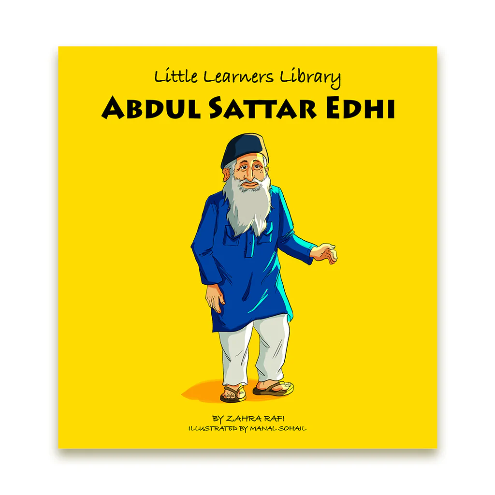

ABDUL SATTAR EDHI
THE REAL LEGEND
OF ALL OUR THE WORLD

Abdul Sattar Edhi was a legendary Pakistani
philanthropist and humanitarian who founded
the Edhi Foundation which operates hospitals,
orphanages, homeless shelters and rehab
centers all over Pakistan. One of the country’s
most respected figures, he is known as “Angel
of Mercy” for his selfless service to the aband
oned, sick, destitute and the ostracized. He wa
s helped in his life’s work by his wife, Bilqui
s Edhi, a nurse committed to the same humanitari
an values as her husband. Born in India in the la
te 1920s, he was raised to be compassionate towar
ds the less privileged. He spent his teenage years
caring for his paralyzed and mentally ill mother whi
ch furthered his passion to do something for the sick
. Forced to move to Pakistan as a young man after the
partition of India, he witnessed the horrors of war and
the massive human sufferings that followed. Moved by the
widespread pain and misery around him, he set about laying
the foundations for what would one day become the Edhi Fo
undation. Having begun his charitable work singlehandedly,
he soon met some kindred spirits who helped him in establ
ishing hospitals and orphanages across the nation. An aus
tere and open-minded individual, he promoted religious to
lerance and advocated for the rights of women to work out
side their homes.